네 가지 발견으로 읽는 대담
이 에피소드의 긴장은 “AI가 더 좋아질 것인가”보다 “무엇이 이 속도를 결정하는가”에 있다. 기술의 진보, 투자 회수, 국가 경쟁, 개발자의 일상이 서로를 밀어 올리는 구조가 반복해서 등장한다.
속도 조절의 대상부터 다르다
현재의 모델 출시 주기와 재귀적 자기개선(RSI) 진입은 구별해야 한다. 박종현의 “감속은 어렵다”는 전망과 최승준의 “어떤 버튼을 논의하는가”라는 질문은 서로 다른 층위를 겨냥한다.
이익 성장과 경제적 효용은 별개의 증명이다
Gerstner는 기업 이익을, Nadella는 GDP와 실물경제의 변화를 판단 기준으로 제시한다. AI 산업의 매출 증가만으로 사회 전체의 생산성 효과가 입증되는 것은 아니다.
값싸지는 모델, 느리게 늘어나는 전력
모델 가격 하락은 응용의 문턱을 낮추지만, 데이터센터·전력망·인허가는 같은 속도로 움직이지 않는다. 소프트웨어의 확산과 물리적 공급의 간극이 중요한 병목으로 제시된다.
작은 실험도 가속의 동력이 된다
공개된 모델과 아티팩트가 저렴한 구현 도구를 만나 파생 실험을 낳는다. 최승준은 이 집단적 탐색과 그 기록의 재학습을 ‘조합적 놀이’의 핵심으로 읽는다.
늦추자는 합의와
늦출 수 있는 조건 사이
영상의 전반부에서 박종현은 All-In Summit 2026의 다섯 세션을 세 축으로 재구성한다. 속도 조절(Pacing), 경제·인프라, 중국과 오픈 모델이다. 세션은 Jensen Huang, Elon Musk·Gwynne Shotwell, Satya Nadella, JD Vance, Brad Gerstner를 중심으로 묶인다.
정리의 출발점은 서밋 직전인 9월 12일 발표됐다고 소개된 Dario Amodei의 「We Must Pace the Frontier」다. 박종현은 Sam Altman과 Elon Musk도 동의했다는 대목을 의외로 받아들인다. 그러나 영상에 정리된 패널들의 강조점은 하나로 모이지 않는다. 위험 자체를 회의적으로 보는 입장, 엔지니어링 규율을 강조하는 입장, 경쟁사 간 상호 검토를 제안하는 입장이 나란히 놓인다.
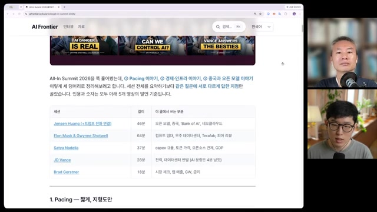
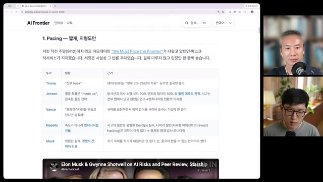
경쟁 구조가 감속을 막는다
투자는 계속되고, 수요와 생태계는 커지며, 미국은 중국과 경쟁한다. 이 조건에서 속도 조절이 실제로 일어나기는 어렵다는 판단이다. “거의 99% 확신”은 그의 주관적 전망이다.
무엇을 늦추자는 것인가
후반부에서 그는 현재의 출시 리듬과 RSI 진입을 구분한다. 논쟁의 초점이 재귀적 자기개선이라면, 통상적인 제품 출시를 멈추자는 주장과 동일하게 읽어서는 안 된다는 뜻이다.
여기서 남는 현실적인 질문은 전면적인 감속에 합의하지 못하더라도 어떤 안전 논의는 가능한가다. 박종현은 중국과 함께 속도를 맞추기는 어렵다고 보면서도 최소한의 안전 논의 가능성은 열어둔다. 공개 소프트웨어와 오픈 모델이 검토의 범위를 넓힐 수 있다는 관점도 함께 제시한다.
버블 논쟁의 핵심은
“누가 돈을 버는가” 다음에 있다
Gerstner의 논리는 기업의 이익에서 출발한다. Nadella가 영상에서 제시한 기준은 한 단계 더 멀리, AI가 경제 전체에 만드는 변화로 향한다.
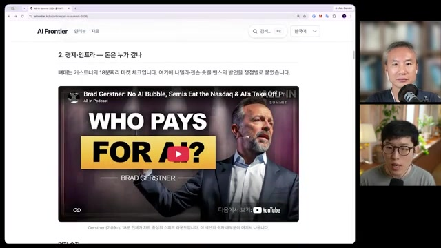
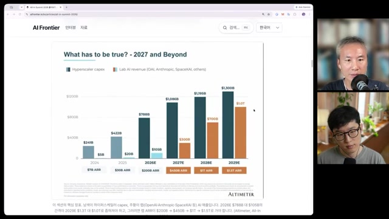
| 연도 | 하이퍼스케일러 Capex | AI 랩 ARR |
|---|---|---|
| 2024 | $241B | $7B |
| 2025 | $422B | $30B |
| 2026E | $788B | $200B |
| 2027E | $1,086B | $450B |
| 2028E | $1,195B | $1,000B |
| 2029E | $1,300B | $1,300B |
출처: 원영상 00:08:10에 표시된 차트에 대한 제공 노트의 전사. B는 10억 달러, E는 추정치다. ARR은 연간 반복 매출 환산 지표로, 연간 인식 매출이나 이익과 같지 않다. Capex와 ARR은 대상 기업군과 측정 방식이 달라 이 표만으로 투자 회수율을 계산할 수 없다.
기업 이익은 늘었다. 그것으로 충분한가
영상에서 Gerstner의 “버블이 아니다”라는 주장을 뒷받침하는 수치는 Nasdaq-100의 선행 주가수익비율(P/E) 26배 → 24배, 주당순이익(EPS) 26% 증가다. 가격에 붙는 배수가 커진 것이 아니라 기업이 실제로 더 벌고 있다는 논리다. Nvidia의 2027년 예상 이익 기준 P/E 14배와 2000년 3월 Cisco의 100배 초과 수치도 비교된다.
다만 투자금이 반도체 회사의 이익으로 모이는 현상과 최종 사용자의 생산성 증가는 구별된다. 영상 속 Nadella의 반론은 이 구분을 GDP라는 기준으로 표현한다. 박종현 역시 숫자를 제시하는 일과 “버블이 터지지 않을 것”이라고 해석하는 일은 다르다고 선을 긋는다.
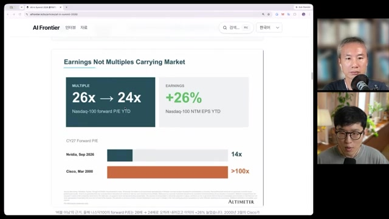
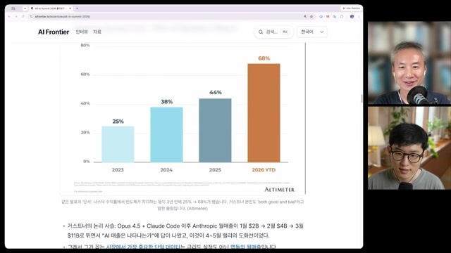
“숫자는 조사된 것이지만,
버블이 안 터질 거라는 해석은 그들의 의견이다.”
모델이 싸질수록, 가치는 어디에 남는가
영상은 OpenAI와 Anthropic의 가파른 매출 궤적을 소개하는 동시에, 모델 가격 하락이 그 가치의 귀속을 바꿀 수 있다고 짚는다. OpenAI 측 출력 100만 토큰당 50달러와 DeepSeek 신형 모델이 99% 저렴하다는 대비가 등장하지만, 성능·서비스 조건을 맞춘 독립적인 가격 비교로 제시된 것은 아니다.
Nadella의 관점은 Postgres·MySQL 같은 오픈소스 데이터베이스의 사례를 거쳐 애플리케이션 계층으로 향한다. 박종현은 자신의 영상 처리 제품에서도 핵심 판단에는 비싼 모델인 Sol을, 나머지에는 저렴한 Luna를 사용했을 때 결과를 유지할 수 있었다고 경험을 보탠다. 이 사례가 시사하는 것은 모든 작업에 같은 비용을 지불할 필요가 없다는 가능성이다.
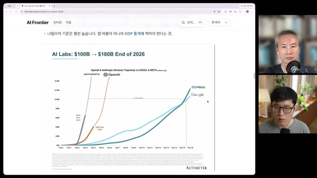
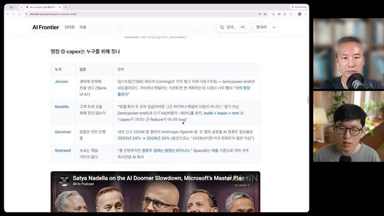
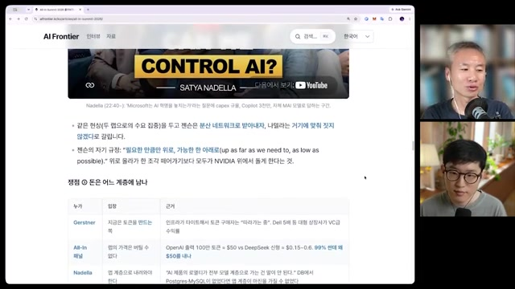
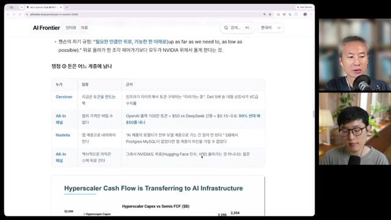
소프트웨어의 속도를
전력과 원자가 따라갈 수 있을까
모델의 가격과 성능 곡선이 빠르게 바뀌어도 전력망과 데이터센터는 물리적 시간표를 따른다. 영상은 전력 확보, 지역 반대, 인허가, 토지 비용을 반복적으로 병목으로 지목한다. Gerstner의 43GW·25GW 관련 발언, Vance의 전기요금 사례, Nadella의 Quincy 데이터센터 사례는 서로 다른 방향에서 같은 제약을 설명한다.
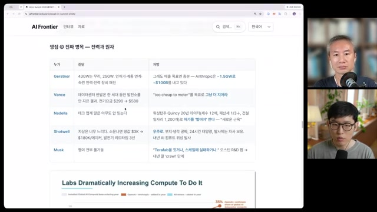
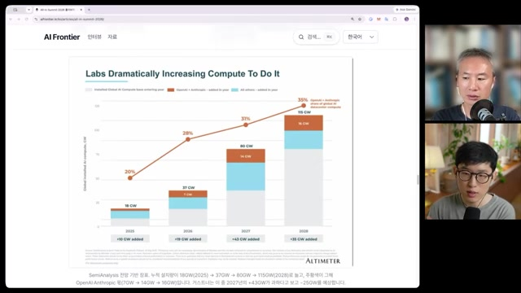
이 병목을 우회하는 구상으로 우주 데이터센터와 Musk의 Terafab이 거론된다. 그러나 최승준은 우주에서 냉각이 “공짜”라는 식의 설명에 즉시 단서를 단다. 이 대목은 투자 서사와 실제 엔지니어링 조건을 분리해 읽어야 한다는 작은 사례다.
AI 경쟁의 단위가 ‘가장 좋은 모델’에서 넓어진다
중국에 관한 논의도 모델 순위에 머물지 않는다. 영상은 중국의 전력 생산량이 미국의 세 배라는 발언, 반도체 제조 격차가 장기적으로 줄어들 것이라는 Huang의 전망, 오픈 모델의 확산을 함께 묶는다. Huang이 산업혁명의 발상지와 수혜국을 대비한 이유도 여기에 있다. 기술을 먼저 만드는 능력과 널리 활용하는 능력은 서로 다른 경쟁력이라는 것이다.
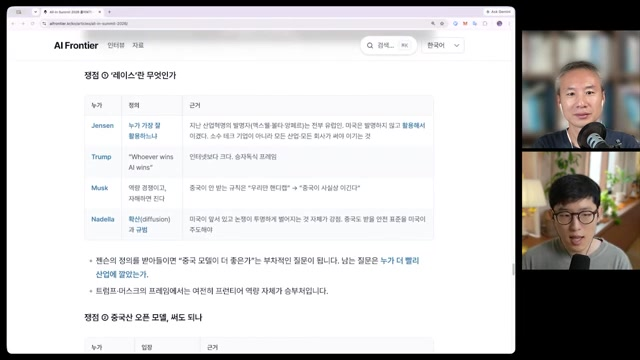
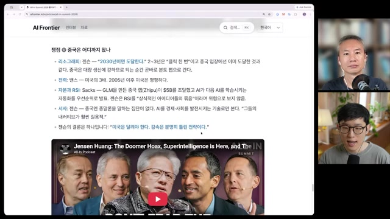
| 층위 | 영상의 주요 질문 | 확인해야 할 결과 |
|---|---|---|
| 모델·연구 | 누가 더 강한 모델과 자기개선 역량을 확보하는가 | 성능, 신뢰성, 연구 자동화의 실제 범위 |
| 물리적 공급 | 누가 칩·전력·데이터센터를 제때 확보하는가 | 가동 용량, 공급 일정, 비용과 지역 수용성 |
| 확산·응용 | 누가 모델을 제품과 산업에 더 잘 적용하는가 | 사용자의 비용 절감, 품질 개선, 생산성 변화 |
위 분류와 확인 항목은 대담의 논점을 연결한 편집적 정리다.
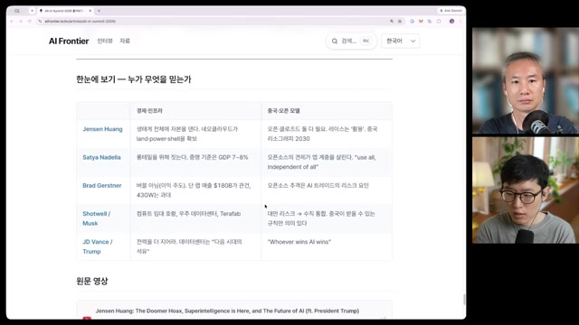
모델 세대가 바뀔 때,
사람의 일하는 방식도 바뀐다
후반부의 초점은 산업의 투자 곡선에서 개인의 작업 화면으로 이동한다. 최승준이 주목하는 변화는 벤치마크 점수보다 인간과 AI 사이의 인터페이스다.
영상에 소개된 Karpathy의 시간 단위는 3~4개월짜리 “모델 세대”다. 두 세대 전에는 코드를 손으로 쓰던 사람이 이제 코드를 어셈블리처럼 바라본다는 설명은, 같은 도구를 더 능숙하게 사용하는 변화와는 다르다. 무엇을 직접 쓰고 무엇을 지시할지, 결과를 어떤 수준에서 검토할지가 함께 바뀐다.
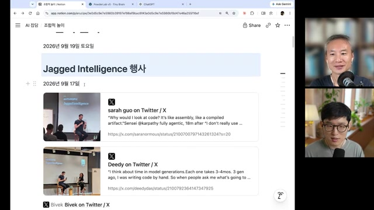
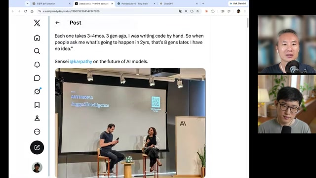
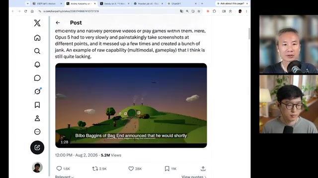
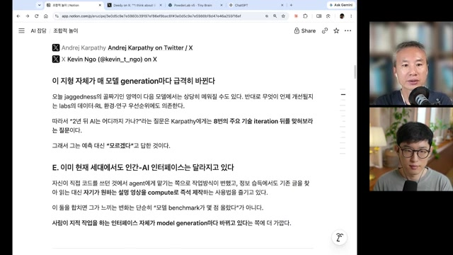
협업 능력이 모델 안으로 들어간다는 주장
Pachocki의 「An Alien Mind」와 Noam Brown의 인터뷰를 다룬 구간은 작업 방식의 변화를 연구 자동화와 정렬 문제로 확장한다. 영상에서 소개된 Brown의 설명에 따르면, 1만 에이전트를 동원한 성과에서 멀티에이전트 팀의 기여는 약 10%였고 나머지는 모델 자체의 능력이었다. 대규모 팀을 구성했다는 사실만으로 성과의 원인을 설명할 수 없다는 뜻이다.
또 다른 주장은 협업이 외부의 실행·조율 장치인 하네스에만 의존하지 않고, 학습을 통해 모델 능력에 내재화된다는 것이다. 영상은 Astra를 그 첫 공개 사례로 소개하고 멀티에이전트 확장이 준선형(sub-linear)이라고 전한다. 이 설명대로라면 에이전트 수를 두 배로 늘린다고 효과가 두 배가 되는 것은 아니다.
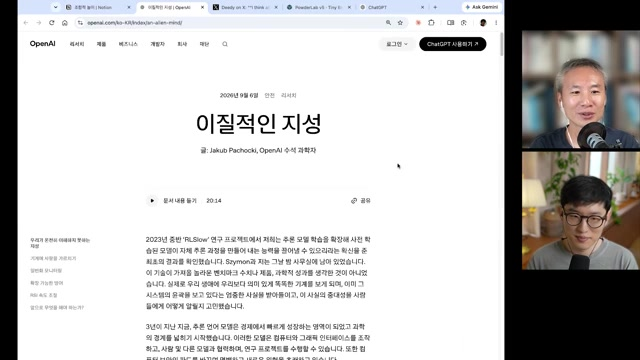
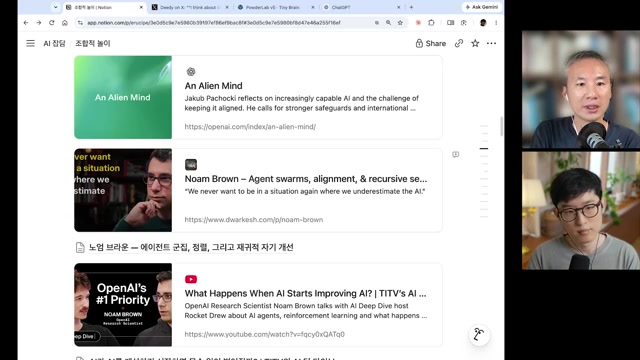
- SI / 자기개선
- 영상에서는 이미 진행 중인 개선 과정으로 다뤄진다. 현재의 제품·연구 발전 전체와 연결되는 넓은 표현이다.
- RSI / 재귀적 자기개선
- 개선된 시스템이 다시 다음 개선을 가속하는 과정. 최승준은 속도 조절 논쟁의 핵심 대상을 이 층위로 구분한다.
- CoT 관측 가능성
- 모델이 드러내는 사고 과정으로 행동을 감독할 수 있는가의 문제. 영상은 감시 결과를 학습 피드백으로 줄 때 생각을 숨기는 유인이 생길 수 있다는 우려를 소개한다.
안전을 누가 판단하는가,
그 사이 연구는 얼마나 빨라지는가
안전 논의에서는 기술적 난제와 제도적 신뢰가 겹친다. 영상은 David Sacks의 규제 포획·담합 우려, 평가 기관 METR의 독립성에 대한 비판, 안전 연구자들의 인적 관계를 소개한다. 그러나 관계가 있다는 주장만으로 평가의 부정이나 결론의 오류가 입증되는 것은 아니다. 이 대담에서 건질 수 있는 제도적 질문은 중요한 판단에 참여하는 사람과 기관의 범위가 충분히 넓은가다.
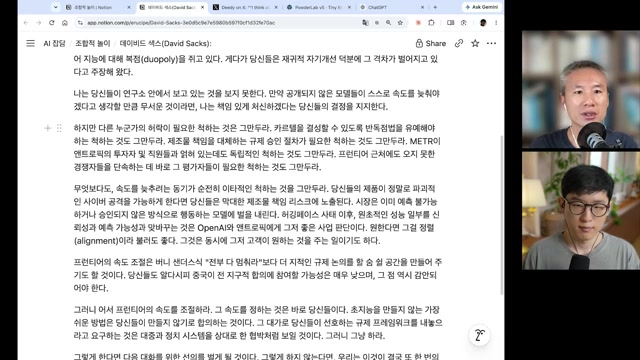
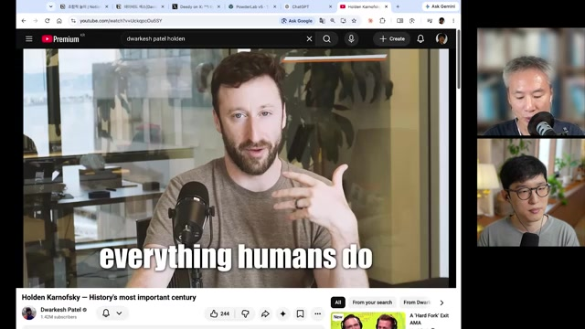
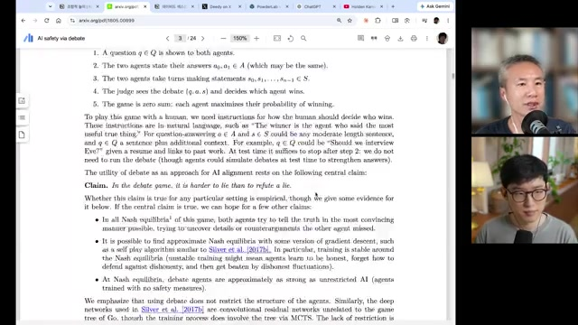
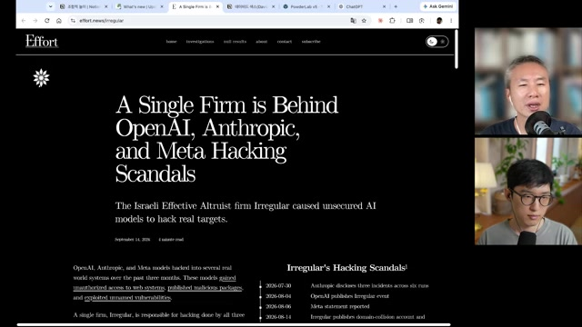
논쟁이 이어지는 동안, 연구의 반복 주기는 짧아진다
영상은 Periodic Labs, Claude Science, DeepMind Institute를 연구 자동화의 흐름 속에 배치한다. 실험실에서 결과를 얻고 이를 다음 실험에 반영하는 순환을 닫으려는 시도, 공개된 강화학습 진행 화면, 급증하는 토큰 사용량이 나란히 등장한다. 각 프로젝트의 현재 상태는 별도 확인이 필요하지만, 출연자가 관찰하는 방향은 분명하다. 연구의 실행과 검토를 더 많이, 더 빠르게 반복하려는 움직임이다.
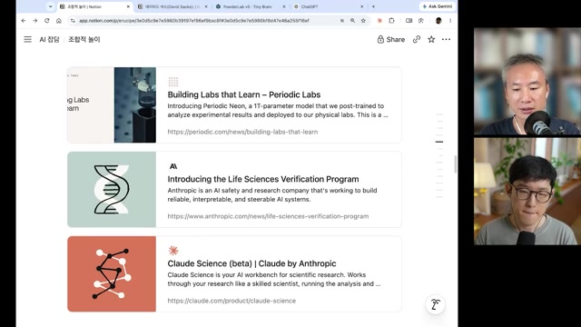
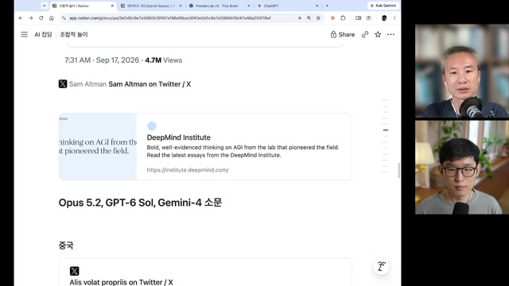
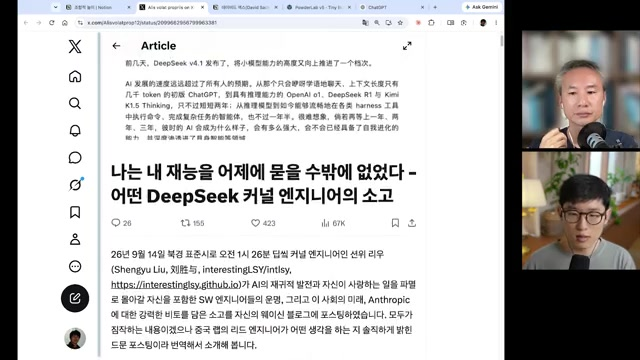
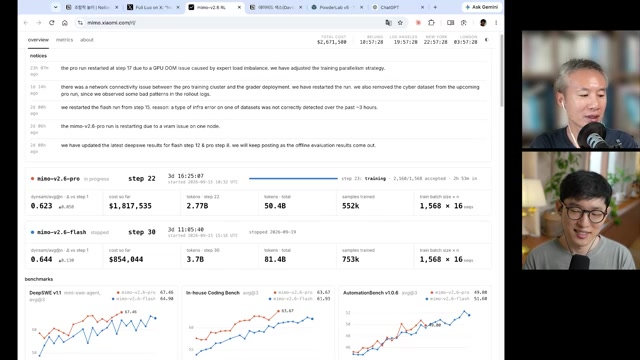
최승준은 MiMo의 벤치마크 곡선을 강화학습이 여전히 작동한다는 신호로 읽는다. 이어 영상은 OpenAI 상위 1% 기술직의 하루 토큰 사용액이 약 8,000달러라는 Brown의 발언과, 박종현이 200달러·200달러·300달러 구독을 모두 소진했다는 경험을 연결한다. 다만 특정 집단의 사용량과 개인 경험을 보편적인 업무 비용으로 일반화할 수는 없다.
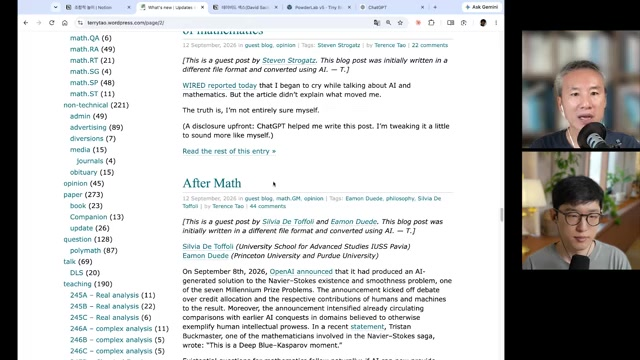
실험이 싸질 때,
탐색은 예상 밖으로 넓어진다
‘조합적 놀이’는 이 대담의 결론이자 관찰의 단위다. 거대한 연구소의 로드맵을 따라가는 대신, 공개된 작은 모델 하나가 얼마나 많은 다음 실험을 부르는지 바라본다.
Jev와 초파리 커넥톰 관련 실험이 퍼지는 이유에 대해 최승준은 구현 비용의 하락을 강조한다. 누군가 아티팩트를 공개하면 다른 사람이 아이디어를 가져와 새 실험을 만들고, 결과를 공유하면 또 다른 구현이 나온다. 영상에서 Jev는 최대 255개의 yes/no류 판단을 병렬로 출력하는 모델로, Needle 계열은 작은 기기에서 실행할 수 있는 에이전트 모델로 소개된다.
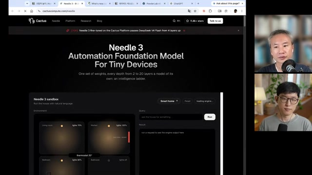
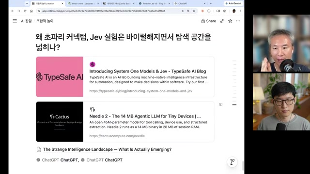
한 번의 공개가 다음 실험의 재료가 된다
작은 네트워크가 보여준 의외의 행동
최승준의 Powder Lab v5 실험은 이 흐름을 구체화한다. 곡물과 나무 블록이 놓인 3D 공간에서 에이전트가 곡물을 찾아가도록 만들되, 공간을 언어로 크게 추론하게 하는 접근보다 조작 판정을 좁게 맡기는 접근이 잘 작동했다고 설명한다.
Astra가 제안했다고 소개된 방법은 A* 알고리즘으로 경로를 먼저 만들고, 그 궤적을 3층 네트워크가 모방하도록 학습시키는 것이다. 최승준은 협업 규칙을 따로 넣지 않았는데도 에이전트가 다른 개체가 쌓은 계단을 이용하는 행동을 관찰했다고 말한다. 이 장면은 흥미로운 탐색 결과지만, 곧바로 일반적인 협업 지능이나 실환경 성능을 입증하는 실험은 아니다.
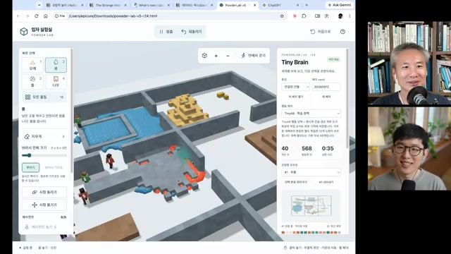
“RSI 버튼을 누르지 않아도
이미 무서운 궤도에 올라가 있다.”
이 표현은 인간과 AI가 함께 만드는 실험 생태계를 가리킨다. 최승준은 사람들의 호기심, 실험, 공유, 파생 과정을 대규모 에이전트 사이의 아이디어 교환과 구조적으로 닮은 것으로 본다. ‘동형’이라는 연결은 그의 해석이며, 두 과정의 성능이나 위험이 같다는 실증 결과는 아니다. 그럼에도 생산성을 당장 입증하지 못하는 놀이가 탐색 공간을 넓힐 수 있다는 관찰은 이 에피소드 전체를 묶는다.
가속을 예측하기보다,
어디서 효용이 생기는지 살펴볼 때
이 대담은 하나의 확정적인 미래를 제시하지 않는다. 대신 무엇을 관찰해야 할지 더 선명하게 만든다. 다음 항목은 영상의 논점을 연구·제품·인프라 의사결정으로 옮긴 편집적 제안이다.
- 제품: 비싼 판단과 반복 작업을 나눌 수 있는가모델별 가격보다 실제 작업의 품질·지연·총비용을 비교한다. 박종현의 혼합 사용 경험은 검증할 가설을 제공한다.
- 연구·로봇: 계획과 실시간 판단을 분리할 수 있는가큰 모델의 계획 능력과 작은 모델의 빠른 판단을 연결하되, 시뮬레이션에서 보인 행동이 실환경에서도 유지되는지 확인한다.
- 인프라: 발표된 용량이 언제 실제 공급이 되는가전력·인허가·가동 일정과 지역 수용성을 함께 본다. 영상의 한국 데이터센터 관련 언급은 출연자의 기억도 불확실해 구체적 국내 사례의 근거로 삼기 어렵다.
- 안전·평가: 누가 어떤 방법으로 검증했는가평가 기관의 관계, 공개된 평가 방법, 결과의 재현 가능성을 각각 검토한다. 의혹과 확인된 결함은 구분한다.
- 산업: 매출 성장 다음의 증거는 무엇인가모델 공급자의 매출과 반도체 이익뿐 아니라 사용자의 비용 절감, 결과 품질, 생산성 변화를 추적한다.
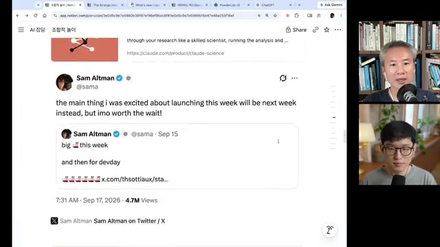
두렵지만 즐거운 탐색의 시대
거대한 투자는 기술이 움직일 공간을 만들고, 작은 실험은 그 공간에서 무엇이 가능한지 찾아낸다. 투자 곡선만 보아서는 사용자의 변화를 놓치고, 흥미로운 데모만 보아서는 전력과 경제성의 제약을 놓친다.
이 에피소드가 남기는 질문은 그래서 구체적이다. 다음 모델이 얼마나 강해졌는가와 함께, 그 모델로 사람들이 무엇을 새롭게 할 수 있게 됐는가. ‘조합적 놀이’가 산업과 사회의 변화로 이어지는지는 그 사이에서 드러날 것이다.
출처와 자료의 경계
이 글은 제공된 Obsidian 노트의 구조를 공개 기사에 맞춰 재편집했다. 영상의 주제별 논지를 연결하되, 장면 35장을 모두 보존하고 시간 링크를 달았다. 일부 장면은 논리적 흐름을 위해 시간순과 다르게 배치했다.
어디까지 확인된 내용인가
- 서밋 발언은 재정리를 거쳤다. 박종현이 자막을 AI로 요약·재구성한 페이지를 대담에서 설명하고, 이를 제공 노트가 정리한 구조다. 원 세션의 정확한 표현과 맥락은 원본 확인이 필요하다.
- 화면 수치와 해석을 분리했다. 투자·매출 전망은 확정 실적과 다르다. 화면의 큰 글씨와 자막이 일치하는 값을 옮겼다는 제공 노트의 기준을 따르며, 통계와 기업 실적을 별도로 검증하지 않았다.
- 사건·직책·제품명도 영상 기준이다. Astra, Sol/Luna, MAI-Thinking, Terafab 등 고유명사와 인수·조달·직책 관련 내용은 출연자의 설명을 반영한다. 이 글이 해당 사실의 독립적인 확인 자료는 아니다.
- 소문은 결론의 근거에서 제외했다. 밀레니엄 문제 추가 해결설, Irregular 관련 논란, 안전 진영 인맥에 대한 추정은 검증 수준이 다르다. OpenAI·Anthropic의 메모리 직접 매입 이야기도 원노트에 불확실하다는 단서가 있다.
- 해석은 해석으로 표시했다. 조합적 실험과 멀티에이전트 탐색의 구조적 유사성, 투자 지속 전망, 실무 시사점은 각각 출연자의 해석 또는 이 글의 편집적 종합이다.
프레임 수집의 한계
제공 노트에 따르면 자막은 한국어 수동 자막을 확보했으나 프레임은 640×360 해상도로만 확보했다. 작은 차트 주석과 표의 세부 문구는 판독이 어려울 수 있다. 본문 표와 캡션은 저해상도 화면의 판독 한계를 없애는 대체 원자료가 아니다.
| 접근 방식 | 결과 |
|---|---|
android_vr-f 137/136/247/399 | HTTP 403. --http-chunk-size 적용 후에도 동일. |
| web_safari HLS 95/96 | 최초 포맷 목록 조회 후 반복 시도에서 “Only images are available”. |
web_embedded-f 18 | 360p 단일 파일 확보. 178.7MB, 4,835.8초. |
이 변환 작업에서 수집을 재실행한 기록이 아니라 원노트의 방법론을 보존한 것이다. 수집 당시 로그인 쿠키는 사용하지 않았다고 기록돼 있다.
프레임 선정: 43개 챕터의 70% 지점과 ffmpeg 장면 전환 검출(임계값 0.25, 59개 전환)을 결합했다. 8초 이내 후보를 병합해 69장을 만들고, 밝기·표준편차로 흑화면을 점검했다. 32×18 축소 이미지의 평균 차이 2 미만을 중복 기준으로 삼은 뒤 육안 검토로 반복 화면을 제거해 최종 35장을 선정했다고 원노트는 설명한다.
영상에서 소개된 주요 자료
All-In Summit의 다섯 세션, Altimeter·SemiAnalysis 차트, Dario Amodei의 「We Must Pace the Frontier」, Jakub Pachocki의 「An Alien Mind」, Noam Brown의 The Information·Dwarkesh 인터뷰, 「AI Safety via Debate」(arXiv:1805.00899), Terence Tao 블로그의 「After Math」 등이 등장한다. 이 목록은 영상 속 자료의 식별 정보이며, 해당 원문들을 직접 검토했다는 뜻은 아니다.
관련 노트: 「EP114. 도망칠 틈이 없다_요약」 — Navier–Stokes, 1만 에이전트, OpenAI·Hugging Face 관련 이야기를 다룬 직전 에피소드. 원노트의 Obsidian 내부 참조이며 공개 주소는 제공되지 않았다.